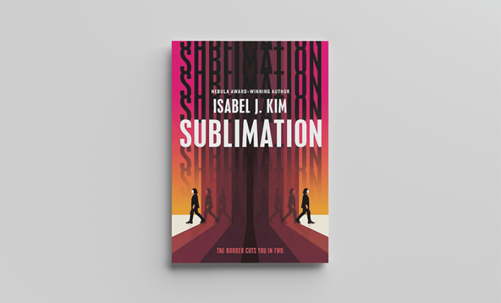
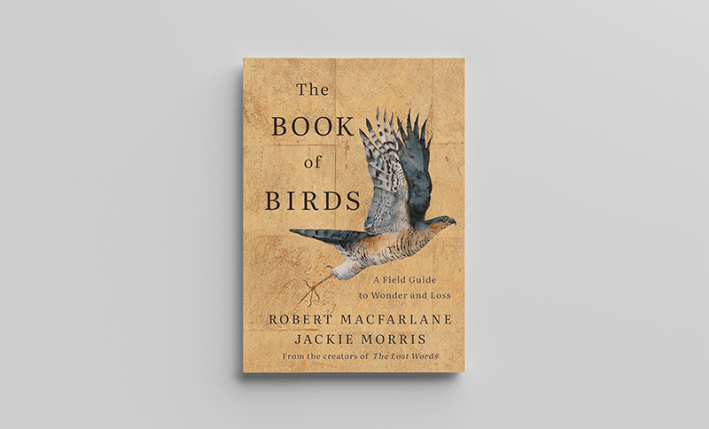
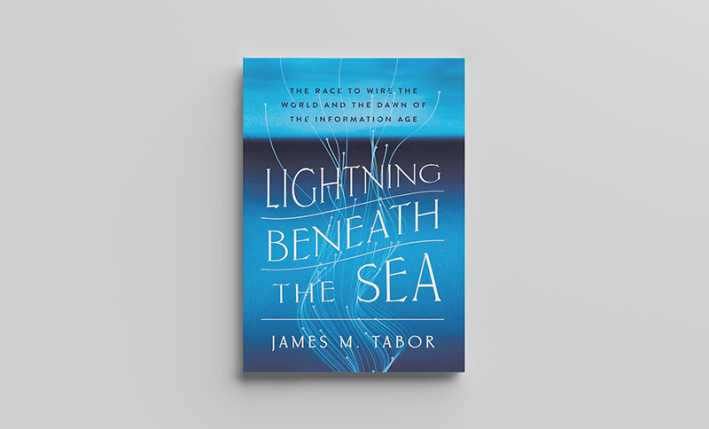
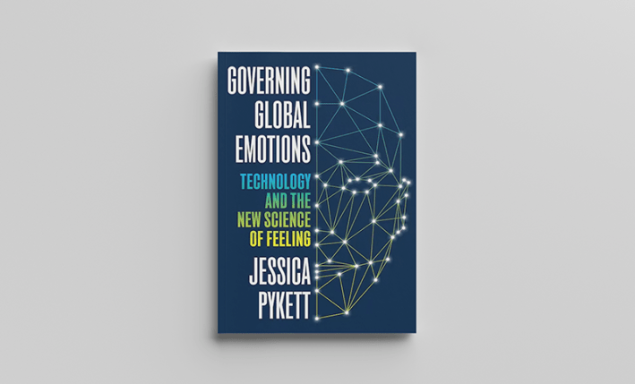
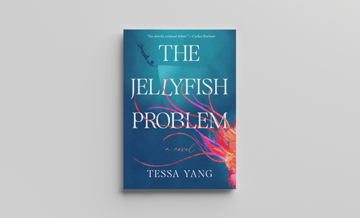
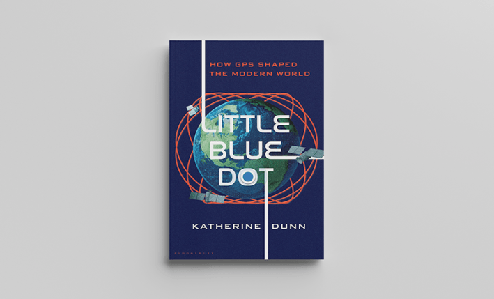
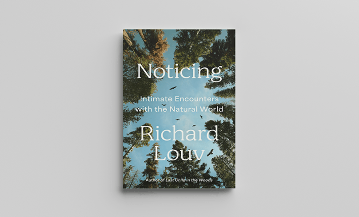

Did you know that female hyenas have to invert their external clitoris before a male can mate with them? On a different note, did you know we laid the first cables at the bottom of the sea all the way back in 1845? And have you ever considered what it would be like to meet a copy of yourself?
This month, our book picks take us from the ocean to the skies, and everywhere in between. Without further ado, here are nine books I’m super psyched to read this June.
Poking the Squid: What We Can Learn from Animal Sex by Perrin Roosevelt Ireland

W. W. Norton & Company
Who wouldn’t want to read a comic book for adults about animal sex? Author and artist Perrin Roosevelt Ireland takes us on a wild journey through the animal kingdom, from matriarchal hyenas to pregnant male seahorses to snake clitorises. Chock full of facts I never knew I was missing, this book is a very rare perfect blend of fascinating and just plain old fun.
Sublimation by Isabel J. Kim

Tor Publishing Group
Humans take international travel for granted these days. But what if you duplicated every time you crossed a border? And then reunited with your original self later on in life? And, just to really get wild, what if your original self had nefarious intentions toward you? That’s the premise of this sci-fi novel. It’s a wild ride, and I’m psyched to take it.
The Book of Birds: A Field Guide to Wonder and Loss by Robert MacFarlane & Jackie Morris

W. W. Norton & Company
There are less birds than there used to be. This field guide looks at 49 different birds, combining beautiful watercolor illustrations with vivid prose to paint a detailed portrait of birds we may not know for much longer. From typical field guide data like flight and feeding habits to a deeper consideration of how these birds’ lives intersect with our own, this book takes the reader from understanding to compassion, all without being maudlin or cloying. A love letter to the variety and mysteries of our feathered friends, this is one not to miss.
Lightning Beneath the Sea: The Race to Wire the World and the Dawn of the Information Age by James M. Tabor

W. W. Norton & Company
I find it mind-boggling to think that we were already wiring the ocean floor in 1845, but indeed we were. This book takes us behind the scenes of the “moonshot of the 19th century”—the quest to stretch telegraph cables across the ocean, first steps on our journey to connect the whole world. A vivid cast of characters including Samuel Morse, a young Lord Kelvin, and Michael Faraday make the story come alive.
Governing Global Emotions: Technology and the New Science of Feeling by Jessica Pykett

Princeton University Press
There’s a lot of data floating out there at the moment regarding human emotion. But what happens when technology misinterprets our emotions, and uses those misunderstandings to make decisions? From smart cities monitoring residents’ feelings to global measures of happiness, author Jessica Pykett takes a good hard look at how emotions are used, defined, and governed via technology—and calls for a radical reassessment of emotion science.
The Jellyfish Problem: A Novel by Tessa Yang

Penguin Random House
A giant, glowing jellyfish who changes everyone that sees it. A grieving marine biologist with an unfinished book on jellyfish. A small island community in Maine feeling absolutely terrorized by said enormous mystery jellyfish. This debut novel combines the thrill of a sea monster yarn with the beauty of human connection and community, and I can’t wait to settle in with it this summer.
Thundering Waters: The Toxic Legacy of Niagara Falls by Christen E. Civiletto
Princeton University Press
Welcome to the true crime book about a waterfall. In this book, author Christen E. Civiletto takes us to Niagara Falls, but rather than focusing on the natural beauty, she dives deep into the millions of tons of toxic and radioactive waste that’s been dumped, incinerated, and vented into the area over decades. The birthplace of the commercial electro-chemical industry by virtue of sheer, hydrodynamic power, the falls and the surrounding area have paid a steep price, and it behooves us all to consider that price, and just who will end up paying it.
Little Blue Dot: How GPS Shaped the Modern World by Katherine Dunn

Bloomsbury
I can remember the early days of GPS, when you would have to explain to people “not from around here” that the road the machine thinks runs straight actually requires a zigzag, and that other road it’s pointing at doesn’t actually exist. We’ve come a long way since those (not so very long ago) days, and this book explores how far we might yet go. It starts with GPS’s early days during World War II, and follows along to the modern day, and even the future, contemplating the technology’s role in international politics, climate, and AI, as well as its vulnerabilities to manipulation.
Noticing: Intimate Encounters with the Natural World by Richard Louv

Hachette Book Group
The joy of noticing is a key theme throughout this book. In it, author Richard Louv asks you to notice the wild world around you, and rediscover your own connection to that world. In the book, he laments how our alienation from nature harms us, and envisions time spent understanding the natural world as a key to understanding ourselves, and to experience a sense of “bio-enchantment.”
There’s no better time than early summer to go out and explore your own natural world. So go out, explore, notice. And maybe bring along one of these books to read outside, ensconced in the sites, sounds, and smells of the natural world. 
Lead image: Tasnuva Elahi; with image by Yulia / Adobe Stock